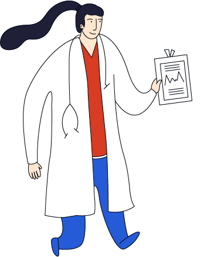

慢性病定义
慢性病全称是慢性非传染性疾病，不是特指某种疾病，而是对一类起病隐匿，病程长且病情迁延不愈，缺乏确切的传染性生物病因证据，病因复杂，且有些尚未完全被确认的疾病的概括性总称。
常见的慢性病主要有心脑血管疾病、癌症、糖尿病、慢性呼吸系统疾病，其中心脑血管疾病包含高血压、脑卒中和冠心病。
慢性病危害
慢性病的危害主要是造成脑、心、肾等重要脏器的损害，易造成伤残，影响劳动能力和生活质量，且医疗费用极其昂贵，增加了社会和家庭的经济负担。我国慢性病综合防控工作力度虽然逐步加大，但防控形势依然严峻，脑血管病、恶性肿瘤等慢性病已成为主要死因，慢性病导致的死亡人数已占到全国总死亡的86.6%，此前为85%，而导致的疾病负担占总疾病负担的近70%。

慢性病发生的危险因素
世界卫生组织调查显示，慢性病的发病原因60%取决于个人的生活方式，同时还与遗传、医疗条件、社会条件和气候等因素有关。
在生活方式中，膳食不合理、身体活动不足、烟草使用和有害使用酒精是慢性病的四大危险因素。